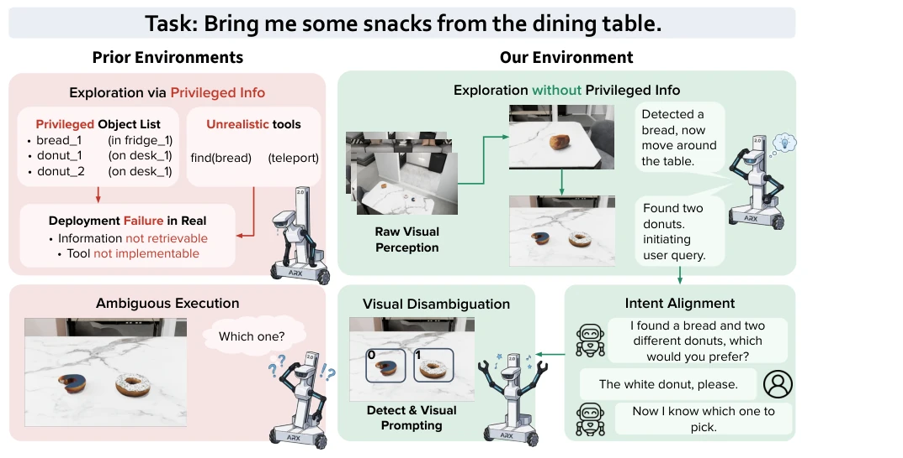
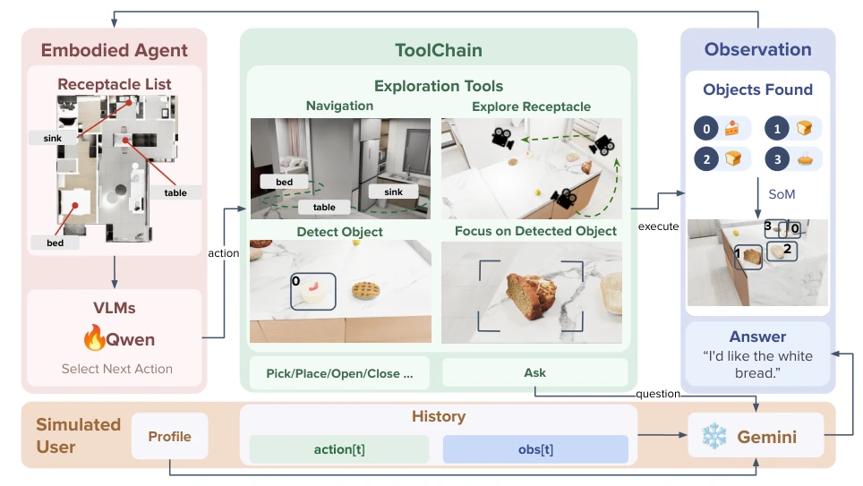
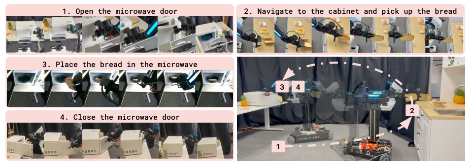
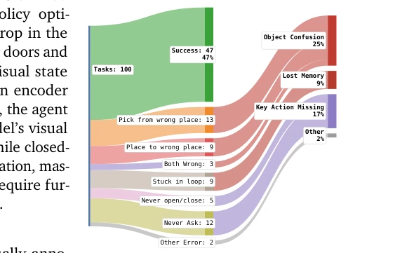

Exploratory, Communicative, and Deployable: Vision-Driven Embodied Agents for Open-World Mobile Manipulation
Boyu Mi, Mengchen Ma, Yifei Yao, Xing Gao, Junting Chen, Yangzi Li abspdf
论文点评Review
这篇 REAL 论文算是给具身智能圈“去魅”了，终于不再依赖模拟器里的“上帝视角”和特权 API 了。框架确实把 Oracle 信息砍了，逼着机器人真·探索，这点值得点赞。不过，78.3% 的实机成功率听着挺美，但细看失败模式，物体混淆和记忆丢失还是硬伤，尤其是开合抽屉这种操作，冻结视觉编码器导致瓶颈明显。说是“开放世界”，其实任务还是局限于物品搬运，没解决复杂的空间关系推理。总的来说，是个扎实的工程化尝试，成功 bridging reality gap，但离真正的通用智能还差口气，别吹太狠，毕竟实机部署依然依赖底层 Pi0.5 的稳定性。
This REAL paper serves to demystify the embodied AI community, finally no longer relying on the "god's-eye view" and privileged APIs in simulators. The framework indeed cuts Oracle information, forcing robots to truly explore, which is worth praising. However, the 78.3% real-world success rate sounds good, but looking closely at failure modes, object confusion and memory loss remain significant flaws. Especially for operations like opening/closing drawers, the frozen visual encoder leads to obvious bottlenecks. Claiming "open world", actually tasks are still limited to item transport, not solving complex spatial relationship reasoning. Overall, it is a solid engineering attempt, successfully bridging the reality gap, but still falls short of true general intelligence. Do not overhype it, after all, real-world deployment still relies on the stability of the underlying Pi0.5.
Existing embodied AI frameworks often suffer from two common pitfalls: first, "cheating", relying on privileged perception information such as global object lists [12, 53, 56] or teleportation tools, leading to failure in real-world deployment; second, a "dictatorial" approach, assuming user instructions are perfect and unambiguous [7, 28], ignoring intent clarification in real interactions. This results in the sim-to-real gap being difficult to bridge, with strategies performing well in simulation but failing in reality. REAL aims to solve these two problems through Oracle-free visual exploration and simulated user interaction, enabling agents to learn to actively ask and explore when information is incomplete, rather than executing blindly. This is not only a technical upgrade but also a return to real deployment scenarios, after all, human users do not provide precise instructions every time.

Figure 1. Comparison of embodied agent frameworks. Left: Reliance on oracle perceptual APIs and open-loop execution in prior environments hinders ambiguity resolution and real-world deployment. Right: REAL removes oracle perceptual APIs while retaining physically obtainable scene priors, enabling RGB-based exploration and natural language interaction for ambiguous instructions.
The core is the REAL framework, encompassing environment, training, and deployment. Environment design abandons privileged APIs, providing RGB observations and deployable toolchains (nav_to, walk_around, etc.), and integrates Gemini-driven simulated users to handle ambiguous instructions. Training is divided into two stages: first SFT to align the Qwen3-VL-8B tool invocation interface, then GSPO reinforcement learning to optimize adaptive reasoning and error recovery. Deployment adopts a hierarchical architecture, with high-level VLM planning and low-level Pi0.5 executing physical actions, achieving zero-shot transfer from simulation to reality via the MCP protocol. The key innovation lies in the historical state aggregation mechanism, avoiding long-range context explosion, while reward shaping encourages active asking, ensuring agents can dynamically adjust strategies in ambiguous scenarios rather than rote memorizing trajectories.

Figure 2. Overview of the environment design. The Embodied Agent receives physically obtainable re- ceptacle priors and RGB/SoM observations with visual IDs, but no oracle object lists, poses, simulator states, or goal locations. The ToolChain exposes deployable exploration tools (nav_to, walk_around, show_object_by_category, gaze_at), Pick/Place/Open/Close controls, and Ask. The sim- ulated user conditions on the agent’s action/observation history and a task profile to answer queries; backend state may be used by handlers but is never exposed to the policy.
Constructed the REAL-Bench benchmark, containing 241 tasks, covering exploration, interference, operation, and interaction. Compared with commercial VLMs like Gemini, GPT, REAL achieves 56.9% success rate on interaction task SUL, superior to most baselines. Real hardware experiments on the LIFT2 robot with 60 trials achieved a 78.3% success rate. Ablation studies show the RL stage significantly improved interference resistance, but the frozen visual encoder led to fine operation bottlenecks. Failure analysis indicates object confusion and long-term memory loss are the main problems. Additionally, the SFT stage carries an overfitting risk, requiring RL to restore generalization. Overall, it validates the effectiveness of the sim-to-real consistency design, but there is still room for improvement in complex operations.

Figure 4. Real-world deployment on the Ark LIFT2 mobile manipulator. REAL transfers the high-level visual-interactive policy zero-shot to a physical backend with the same MCP tool interface. The execution trajectory demonstrates causal planning (e.g.,, preparing the microwave before fetching food), human-robot disambiguation under multiple candidate objects, and language-to-physical grounding for closed-loop task completion. Quantitative reliability is reported in table 2.

Figure 3. Failure mode taxonomy. Manual anal- ysis over 100 evaluation episodes from the best SFT+RL checkpoint.